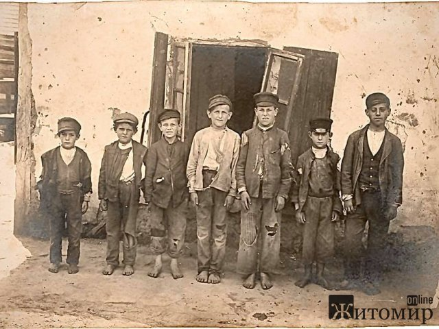

В кино я не ходил, не было денег, но гроши на мороженое бабушка давала, а мороженщик с повозкой ездил по улице и призывал детей.
 Удивительное тогда было время, я тогда не о чем не думал, хоть в бедноте, мне было хорошо, но чего-то не хватало, хотелось больше знать о жизни людей.
У меня были хорошие товарищи, они меня знакомили с событиями в жизни, и они меня познакомили с комсомолом. Я тайно от родителей в 15 лет, 1920 году вступил в комсомол и членом ЧОНА (17 апреля 1919 года ЦК РКП (б) принял постановление о создании частей особого назначения — ЧОН), военизированные батальоны, где обучали, как обращаться с оружием и бороться с бандами. Я стал посещать комсомольский клуб, в бывшем купеческом доме. В комсомольском клубе мы пели “Мы молодая гвардия рабочих и крестьян”. Изучали Эсперанто на предмет ускорения на предмет ускорения мировой революции путем создания языка для пролетариев всех стран, упорно грызли гранит науки о коммунизме….
Меня еще увлекало в комсомольском клубе то, что нам давали каждому хвост селедки, без хлеба, а запивали не чаем, а кипятком. Без сахара, но была веселая, хоть и бедная жизнь.